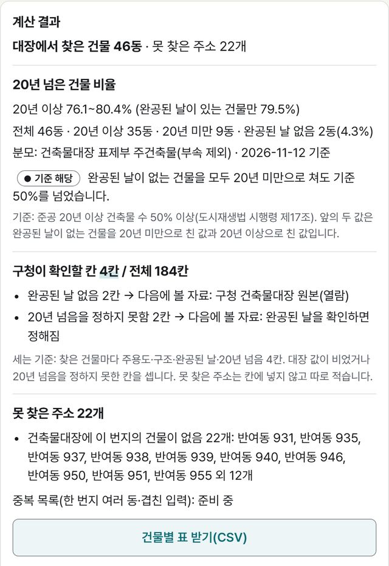

대상지 계산
주소 목록을 붙여 넣으면 건물마다 건축물대장과 맞춘 표가 나옵니다 · 부산 254개 동
ⓘ 자세히: 계산 범위·받는 파일
건물마다 대장에서 완공된 날(사용승인일)을 찾아 20년 넘은 건물 비율과 근거 표를 만듭니다. 못 찾은 주소는 까닭과 함께 따로 적습니다.
건물 자료 · 부산 254개 동
저층 주거 3분의 2(노후주거지정비 공모 가이드라인)와 재개발 노후·불량 비율(부산 정비조례)도 기준 원문과 함께 셉니다.
결과는 건물별 표(CSV), 한글 1쪽, 구역 경계(SHP)로 받습니다. 주소와 구역은 이 기기 안에서 계산합니다.
아직 계산하지 않았습니다. 주소 목록을 넣거나 구역을 그리면 여기에 결과가 나옵니다.

계산 결과
건물별 표
참고용 계산입니다. 판단은 구청·담당 기관이 합니다.
노후주거지정비 신청요건과 부산 정비조례 계산 규칙은 담당자가 원문과 맞춰 보기 전인 초안입니다. 사업계획서나 조합 자료에는 '참고 계산'으로 적고, 제출 전에 담당 기관이 원문과 대조하도록 알려 주세요. 기준 원문과 판본 보기
요건별 결과
신청요건 1쪽은 현황조사 항목별 확인한 내용과 추가확인 항목, 이 기기의 현장 기록을 함께 담습니다.
계산 근거 보기
그래프 보기
행정동의 쇠퇴를 보는 세 가지 기준: 인구·사업체·오래된 건물
①·②는 주소 목록으로 구하지 못하는 행정동 값입니다.
신청 구역이 속한 행정동을 고르면 값·출처·기준일을 보여 줍니다.
주택정비형 재개발 입안요건
조례 제5조②2는 주택정비형 재개발에만 적용됩니다.
도시정비형 재개발은 이 기준의 대상이 아닙니다.
종합 판정이 아닙니다.
‘추가확인’은 현재 자료로 해당 여부를 정할 수 없는 요건입니다. 줄마다 면적 입력, 지적도, 현장·도면 확인이나 행정 판단 등 필요한 내용을 표시합니다.
주민 동의와 재건축진단은 다루지 않습니다.
건축물대장에 없는 무허가 건축물은 세지 않습니다(조례상 노후·불량에 포함). 현장 기록으로 확인하기
근거 문서 받기
다른 형식과 부록 받기(CSV·사전컨설팅 부록·수기 대조 표본)
한글 파일이 열리지 않으면 같은 내용을 CSV로 받으세요.
QGIS에서는 CSV를 첫 줄(안내 문구) 하나 건너뛰고 열어, 연속지적도의 PNU 칸과 결합하면 지도에 붙습니다.
리뉴맵은 필지 도형을 담지 않아 GeoJSON은 만들지 않습니다.
수기 대조 표본은 같은 목록이면 늘 같은 건물이 뽑힙니다.
건축물대장 열람 값과 맞춰 보고 결과를 문서에 적으세요.
오래된 창고·공장도 같은 건물 자료로 볼 수 있습니다.
행정동 값으로 쇠퇴 요건이 안 맞으면 집계구(국가데이터처가 동보다 잘게 나눈 통계 구역) 단위 쇠퇴 요건으로 따로 볼 수 있습니다.
경계안 비교
경계안은 3개까지 이 기기에만 저장합니다.
같은 기준으로 다시 세어 나란히 보여 줍니다.